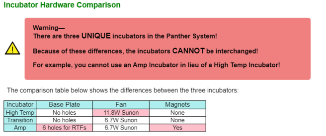
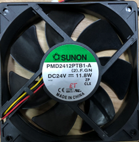
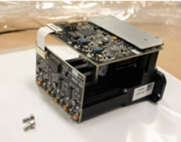
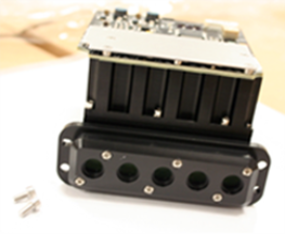
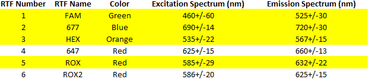
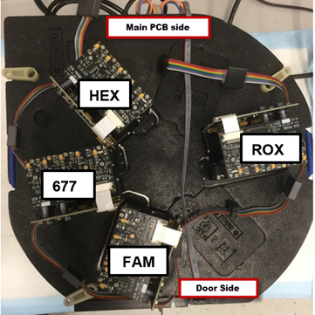
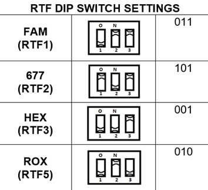

Incubator Troubleshooting Best Practices
Topic covers best practices to troubleshoot the instrument's incubators. Sections include:
- Incubator Hardware Comparison
- Servicing
- Helpful Materials
- AMP Incubator and Real Time Fluorometers
- RTF Orientation and Dip Switch Settings
- Installation Issues and Common Errors for RTFs
Incubator Hardware Comparison

Servicing
- Review logs to help isolate the root cause.
- Use the Panther System Service Manual for Service Procedures.
- Important: Always use universal precautions when servicing any module on the Panther System.
- Important: Always ensure incubator is cleared of MTUs prior to servicing and/or removal.
-
Follow the Total Service Call guidelines whenever servicing the Panther System for any reason. For the incubators:
- Inspect all doors to ensure they open and close smoothly.
- Inspect all incubator belts for wear, and replace as necessary.
- Important: Never attempt to convert or interchange any of the incubators!
Helpful Materials
Bad Bearings: Axial and Vertical Bearing Slop
To view a one-minute video recording that illustrates slop in the axial and vertical bearings, click or tap the image below, then click or tap the play icon. The recording opens in your browser.
Error code 03x.002.00081: Motor drive position is greater than the allowed error at the home pin.
Incubator Fan Differences
Table below shows differences among fans for each incubator.
| AMP External | AMP/Transition | High Temp |
|---|---|---|
| 1.9 W Sunon | 6.7W Sunon | 11.8W Sunon |
| PN 903678 | PN 902925 | PN 903627 |
|
 |
AMP Incubator and Real Time Fluorometers
AMP Incubator currently uses four of six possible Real Time Fluorometers (RTFs).
Images below show two views of an RTF:


Table below shows specifications for RTFs in use, numbered 1, 2, 3, and 5.

RTF Orientation and Dip Switch Settings
To perform correctly, RTFs must be installed in the correct orientation, per the Panther Service Manual for Real Time Assays.


WARNING! The RTFs cannot be interchanged by readdressing the DIP switches!
Installation Issues and Common Errors for RTFs
Unable to Complete Instrument Setup or RTF Failure
- Check RTF1 LED – LED should blink at one-second intervals after initial power on. If one RTF in the chain is bad, subsequent RTFs after will not be lit, or will have a solid light.
- Check DIP switches on all RTFs.
- Check RTF cable – swap RTF1 position, or move cable to connector over.
Alignment Curve is Wavy or bumpy
- Check: carousel bearings, magnets, motor belt tension.
- MTU carriers in MTU are not loose.
FLSOR or Nominal ranges out of specification
-
Firmware issue – search for FLSOR in this guide.
-
Possible debris or dirty lens – clean RTFs.
- Without removing the incubator, remove Amp incubator’s shield, located underneath the incubator.
- Remove RTF X. Important: Carefully remove the RTF from the instrument – from underneath – so you do not dislodge any dirt or debris from RTF, and carefully inspect it. Follow all procedures in Panther Service Manual.
- Check lens for debris - if you find debris, confirm what it is: glove, foam from incubator, dust, and the like.
- Clean lens, then run SSW check again.
- If you find no debris, shake the RTF lightly, and listen carefully for rattling. Replace RTF if you hear a rattling sound.
- Replace RTF if you find nothing apparent, or if issue continues after cleaning.
PQ fails with ebl flags on Calibrators
-
ROX and HEX RTFs in the wrong position.
Review RTF curves.
-
Wrong RTF shipped.
Verify Serial Number on RTF matches label on box.
 button at the top of the page to send feedback, comments, or change requests.
button at the top of the page to send feedback, comments, or change requests.